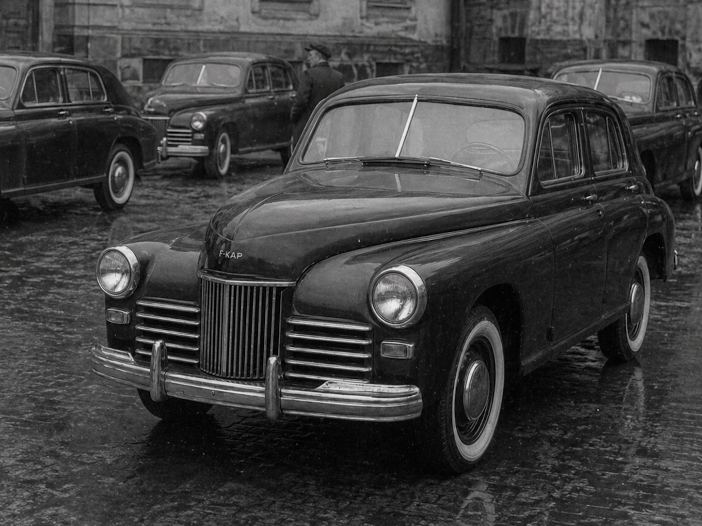

F-KAP Go
F-KAP Go was a post-war civilian car by F-KAP, produced from 1944 to 1958. The model became the plant’s first major civilian vehicle after the period of military production and was manufactured as a mass-market sedan, including for deliveries to the USSR.

Background
After the war, the plant returned to civilian cars, but several years of work on military equipment had led to a loss of pace in civilian design. To quickly enter the market with a mass sedan that was modern for its time, F-KAP decided to rely on the Soviet engineering base and ready-made solutions that had already proven themselves in post-war reality.
Development
Choice of base
As part of accelerated development, F-KAP engineers turned to Soviet experience and studied the drawings of the GAZ M-20. As a result, the appearance and general structural logic of the Go turned out to be very close to the M-20. After that, the plant refined the car by adding typical F-KAP solutions for winter operation and expanding the basic equipment.
Start of production
The Go was launched into production as a “ready-made” mass car: the focus was on producing a large volume without a complex system of packages and rare options. This simplified production, maintenance, and export deliveries.
Equipment
One of the Go’s distinctions was its single rich equipment level. Standard equipment included a built-in heater and a built-in radio. For cold regions, the option of wood-fired preheating remained available, which was considered familiar for the early F-KAP school.
When purchasing the car, the company included a winter tire set with it. This was used both as part of marketing and as a practical measure for winter operation.
Production
Serial production of the Go began in 1944. The model was produced until 1958 and remained the plant’s main civilian sedan throughout the post-war period, while the enterprise stabilized its civilian line.
Export
Deliveries to the USSR
Export to the USSR became one of the key directions for the Go. Deliveries began in 1945, and the car gained a reputation as a vehicle with “full equipment”: at a comparable price, it offered more built-in conveniences. Despite discussions about its similarity to the GAZ M-20, in practice the model was bought willingly because of its equipment and winter suitability, as well as because of the winter tire set included as a gift.
End of external deliveries
In the post-war period, F-KAP stopped deliveries to markets outside the Soviet bloc and focused on the domestic market and allied directions. As a result, the Go became a model oriented toward the “bloc” market.
Reception
The Go is often described as a pragmatic post-war project: the rapid release of a mass sedan on an understandable base, strengthened by traditional F-KAP solutions for winter operation and a simple approach to equipment. For the plant, the model became a return to civilian production and a consolidation of its position on the allied market.